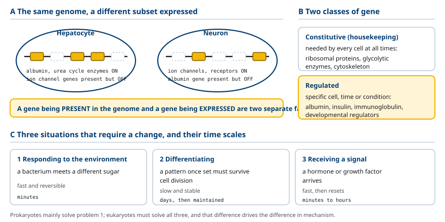
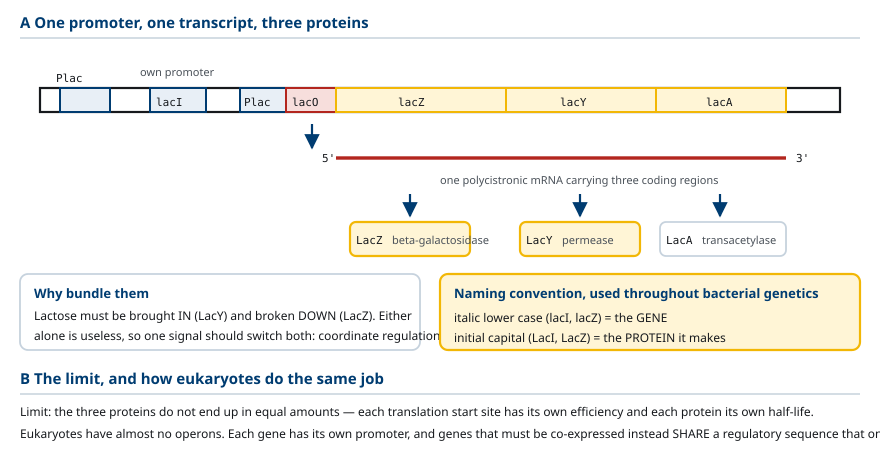
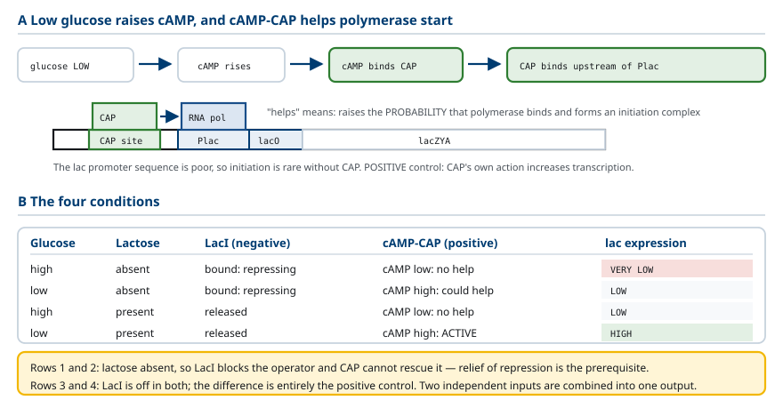
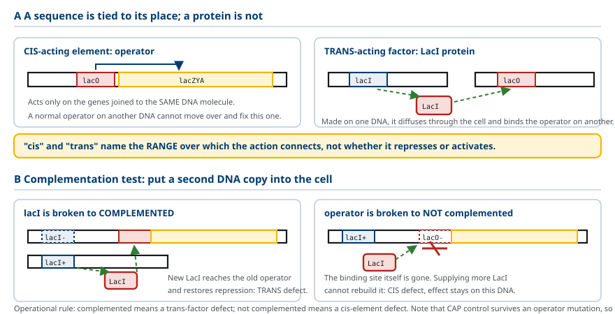
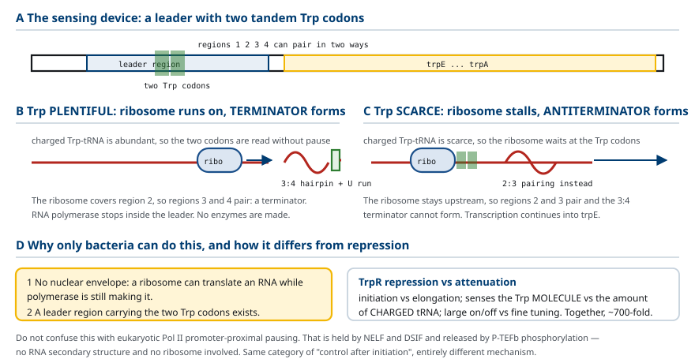
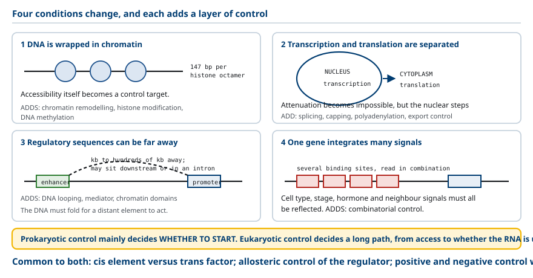

M03-W04-L02 · 분자유전학과 계통별 의학생화학특론
유전자 발현 조절의 원리와 조절 단위
Principles of Gene Expression Control and the Units of Regulation
학습목표
- 유전자가 존재하는 것과 발현되는 것을 구별하고, 같은 유전체를 가진 세포가 서로 다른 일을 하는 근거를 설명한다.
- 단백질 양을 바꿀 수 있는 단계를 전사부터 분해까지 모두 들고, 전사 개시가 주된 조절 지점이 되는 이유를 자원 절약의 관점에서 설명한다.
- Promoter와 operator를 결합하는 단백질과 기능으로 구분하고 두 서열이 모두 cis 조절서열인 이유를 쓴다.
- Operon의 정의를 쓰고 하나의 전사 단위로 묶는 것이 어떤 이점을 주는지 설명한다.
- Lac operon의 음성 조절을 LacI와 allolactose의 관계로 설명하고, 유도물질이 발현을 올리는데도 음성 조절이라 부르는 이유를 쓴다.
- Lac operon의 양성 조절을 cAMP–CAP로 설명하고 포도당과 젖당의 네 조건에서 발현량을 예측한다.
- Cis 작용 요소와 trans 작용 인자를 정의하고 돌연변이 보완 실험으로 둘을 구별하는 논리를 쓴다.
- Trp operon의 조절 목표가 lac operon과 반대인 이유를 이화와 생합성의 차이로 설명한다.
- Attenuation의 기전을 리더 RNA의 두 가지 2차 구조로 설명하고 이것이 억제인자에 의한 조절과 어떻게 다른지 구분한다.
- 진핵세포의 조절이 원핵세포와 달라지는 네 가지 조건을 들고 각 조건이 어떤 조절 층위를 추가하는지 쓴다.
선수지식
- M03-W02-L02 RNA의 종류와 전사의 기전 — RNA polymerase, promoter, 전사의 세 단계
- M03-W03-L03 Ribosome과 번역의 단계 — 개시·신장·종결, polysome
- M01-W06-L02 유전자와 유전체의 구성 — 유전자의 구조, 조절서열의 위치
강의 구성
- 1. 유전자의 존재와 유전자의 발현은 다르다
- 2. 단백질 양을 바꿀 수 있는 모든 단계
- 3. Promoter와 operator: 두 종류의 조절서열
- 4. Operon: 함께 조절하고 함께 전사하는 단위
- 5. Lac operon의 음성 조절: LacI와 allolactose
- 6. Lac operon의 양성 조절: cAMP–CAP와 네 조건
- 7. Cis 작용 요소와 trans 작용 인자
- 8. Trp operon: 생합성 경로의 조절
- 9. Attenuation: 전사가 시작된 뒤의 조절
- 10. 진핵세포에서 달라지는 네 가지 조건
1. 유전자의 존재와 유전자의 발현은 다르다
사람의 간세포와 신경세포는 거의 같은 유전체를 가지고 있다. 두 세포가 전혀 다른 일을 하는 이유는 가진 유전자가 다르기 때문이 아니라, 어떤 유전자를 얼마나 쓰는지가 다르기 때문이다. 간세포는 혈장 단백질인 albumin을 대량으로 만들고, 신경세포는 신호 전달에 필요한 이온 통로와 수용체를 만든다. 두 세포에 albumin 유전자와 이온 통로 유전자가 모두 있지만, 발현되는 쪽이 다르다.
여기서 이 단원 전체를 지탱하는 구별을 분명히 해야 한다. 유전자가 유전체에 존재하는 것과 그 유전자가 발현되는 것은 별개의 사실이다. 세포 분화에서 달라지는 결정적 요소는 DNA의 염기서열 자체가 아니라 그 정보를 읽는 방식이다.
유전자를 두 종류로 나누어 보면 조절의 범위가 보인다.
- 항시 발현 유전자(constitutive gene, housekeeping gene): 모든 세포가 살기 위해 항상 필요한 유전자다. Ribosome 단백질, glycolysis 효소, cytoskeleton 단백질이 여기 속한다. 발현량이 크게 변하지 않는다.
- 조절 유전자(regulated gene): 특정 세포, 특정 시기, 특정 조건에서만 발현된다. Albumin, insulin, 면역글로불린, 발달 조절 인자가 여기 속한다.
조절 유전자의 발현이 바뀌어야 하는 상황은 세 가지다. 첫째, 환경 변화에 대응할 때다. 세균이 주변의 당이 바뀌면 그 당을 처리하는 효소를 바꾸는 것이 예다. 둘째, 세포가 분화할 때다. 한 번 정해진 발현 양상을 세포 분열 뒤에도 유지해야 한다. 셋째, 신호를 받았을 때다. 호르몬이나 성장 인자가 도착하면 수 분에서 수 시간 안에 발현이 바뀐다.
세 상황의 시간 규모와 가역성이 다르다는 점이 중요하다. 환경 대응은 빠르고 가역적이어야 하고, 분화는 느리고 안정해야 한다. 이 차이가 뒤에서 볼 조절 기전의 차이로 이어진다. 원핵세포는 주로 첫 번째 과제를 풀고, 진핵세포는 세 과제를 모두 풀어야 한다.

2. 단백질 양을 바꿀 수 있는 모든 단계
단백질 유전자의 산물이 기능하기까지는 여러 단계를 거친다. 각 단계가 모두 조절 지점이 될 수 있으므로, 조절을 공부할 때는 먼저 전체 단계를 늘어놓고 어느 단계를 다루는지 지정해야 한다.
1. Chromatin 상태: 진핵세포에서 DNA가 histone과 결합한 상태가 전사 기계의 접근 가능성을 정한다. 2. 전사 개시: RNA polymerase가 promoter에 자리 잡고 RNA 합성을 시작하는 빈도다. 3. 전사 신장과 종결: 시작한 polymerase가 끝까지 진행하는 비율, 그리고 중간에서 끝나는지 여부다. 4. RNA 가공: Capping, splicing, polyadenylation. 특히 대체 splicing은 하나의 유전자에서 여러 단백질을 만든다. 5. RNA 수송과 국소화: 핵에서 세포질로 나가는지, 세포 안의 어느 위치로 가는지다. 6. RNA 안정성: mRNA의 반감기다. 같은 양이 만들어져도 빨리 분해되면 쌓이지 않는다. 7. 번역 개시: 같은 mRNA에서 번역을 얼마나 자주 시작하는지다. 8. 번역 후 수식과 단백질 분해: 활성화, 수식, 그리고 ubiquitin-proteasome 경로에 의한 선택적 분해다.
이 가운데 전사 개시가 가장 널리 쓰이는 주된 조절 지점이다. 이유는 자원 절약에서 나온다. 어떤 효소가 필요하지 않은 상황을 생각해 보자. 그 효소의 mRNA를 만들지 않으면 번역에 쓸 주형이 없으므로 아미노산과 ATP도 쓰이지 않는다. 가장 앞 단계에서 끄는 것이 뒤따르는 모든 비용을 함께 줄인다.
반대로 뒤쪽 단계의 조절은 다른 이점이 있다. 이미 만들어 둔 mRNA나 단백질을 쓰면 빠르다. 전사부터 시작하면 수십 분이 걸리지만, 저장된 mRNA의 번역을 켜거나 저장된 단백질을 활성화하면 수 초에서 수 분이다. 난자가 수정 직후 전사 없이 저장된 mRNA로 분열을 시작하는 것이 극단적인 예다.

3. Promoter와 operator: 두 종류의 조절서열
전사 개시를 조절하려면 먼저 전사가 어디서 시작하는지를 정해야 한다. 그 자리를 지정하는 DNA 서열이 promoter다.
Promoter는 전사 개시점 주변에 있는 서열이며, RNA polymerase가 인식하는 자리다. 세균에서는 RNA polymerase의 σ 인자가 promoter를 인식한다. 대장균의 대표적인 promoter는 전사 개시점에서 상류 10 염기 부근(−10)과 35 염기 부근(−35)에 보존된 서열을 가진다. Promoter 서열이 이상적인 서열에 가까울수록 전사 개시가 자주 일어난다.
여기서 중요한 구별이 있다. Promoter는 단백질을 암호화하지 않는다. 효소의 아미노산 서열을 지정하는 대신, 그 효소의 mRNA 합성을 어디서 시작할지를 정하는 데 관여한다. 즉 정보의 종류가 다르다.
두 번째 조절서열이 operator다. Operator는 조절 단백질이 인식하는 특정 DNA 서열이며, 보통 promoter 주변에 있다. 조절 단백질이 operator를 차지하면 RNA polymerase가 전사를 시작하는 과정이 방해받는다.
Promoter와 operator는 둘 다 DNA의 일부지만 결합하는 단백질과 기능이 다르다.
| 구분 | Promoter | Operator |
|---|---|---|
| 결합하는 분자 | RNA polymerase (σ 인자) | 조절 단백질 (억제인자 등) |
| 기능 | 전사 개시 위치의 지정 | 전사 개시 빈도의 조절 |
| 서열이 좋을 때의 결과 | 전사가 자주 시작된다 | 조절 단백질이 잘 결합한다 |
| 변이의 결과 | 전사량이 전반적으로 변한다 | 조절에 대한 반응이 변한다 |
용어를 하나 더 확정해야 한다. 전사 개시점(transcription start site) 은 RNA 합성이 실제로 시작되는 염기의 위치이며, 그 염기를 +1로 삼는다. 상류는 음수, 하류는 양수로 표시한다. Promoter의 −10, −35는 이 좌표계에서의 위치다.

4. Operon: 함께 조절하고 함께 전사하는 단위
세균이 젖당(lactose)을 이용하려면 두 가지 일이 모두 필요하다. 젖당을 세포 안으로 들여오는 일과, 들어온 젖당을 더 작은 당으로 분해하는 일이다. 분해 효소만 있고 수송체가 없으면 기질이 들어오지 못하고, 수송체만 있고 효소가 없으면 들어온 기질을 쓰지 못한다. 함께 있어야 쓸모가 있는 기능이다.
이런 기능을 묶어 발현하는 방식이 operon이다. Operon은 하나의 promoter에서 함께 전사되고 함께 조절되는 유전자들의 단위다. RNA polymerase가 공통 promoter에서 출발해 여러 유전자를 이어서 전사하므로, 만들어진 하나의 mRNA에 서로 다른 단백질을 만드는 정보가 여러 개 들어 있다. 이를 polycistronic mRNA라 한다.
Lac operon의 구성은 다음과 같다.
- lacZ: β-galactosidase를 만든다. 젖당을 glucose와 galactose로 분해한다.
- lacY: permease를 만든다. 막에서 젖당의 유입을 돕는다.
- lacA: transacetylase를 만든다. 일부 thiogalactoside에 acetyl기를 붙이며, 젖당 이용의 주된 경로는 아니다.
세 유전자가 하나의 전사 단위에 배열되어 있다. 조절 기전을 이해할 때는 LacZ와 LacY를 중심으로 보면 된다.
여기에 네 번째 유전자가 관여하지만 성질이 다르다. lacI는 operon 바깥에서 별도의 promoter로 발현되며, LacI 억제 단백질을 만든다. LacI는 젖당을 분해하는 효소가 아니라 lac operon의 DNA에 결합해 전사를 억제하는 조절 단백질이다. 즉 산물을 생산하는 유전자와 생산량을 조절하는 유전자가 구분된다.
표기 관례도 확정해 두어야 한다. 기울임체 소문자(lacI, lacZ)는 유전자, 머리글자가 대문자인 것(LacI, LacZ)은 그 유전자가 만드는 단백질이다. 이 관례는 세균 유전학 전체에서 쓰인다.
Operon 방식의 이점은 동시 조절(coordinate regulation) 이다. 하나의 신호로 여러 유전자를 함께 켜고 끌 수 있다. 다만 각 단백질의 최종 양이 반드시 같아지는 것은 아니다. 하나의 mRNA에서도 각 번역 개시 자리의 효율이 다르고, 각 단백질의 반감기도 다르기 때문이다.
진핵세포에는 operon이 거의 없다. 대신 각 유전자가 자신의 promoter를 가지고 따로 전사되며, 함께 발현되어야 하는 유전자들은 같은 전사인자가 인식하는 조절서열을 공유하는 방식으로 묶인다. 같은 목표를 다른 방식으로 달성한다.

5. Lac operon의 음성 조절: LacI와 allolactose
젖당이 없는 조건에서 lac operon의 전사는 낮다. 기전은 다음과 같다. 세포 안에 이미 존재하는 LacI가 operator에 결합해 RNA polymerase의 전사 개시를 방해한다. 젖당을 처리하는 단백질을 많이 만들 필요가 없는 상태가 유지된다.
LacI가 젖당이 들어온 뒤에 비로소 만들어지는 단백질이 아니라는 점에 주의해야 한다. LacI는 상시 발현되어 있고, 조절은 이미 있는 LacI가 DNA에 붙어 있는지 떨어져 있는지로 결정된다.
젖당이 들어오면 어떻게 신호가 전달되는가. 중요한 점은 젖당 자체가 LacI에 작용하는 신호가 아니라는 것이다. 세포 안에 들어온 젖당의 일부가 LacZ의 작용으로 allolactose로 바뀌고, 이 allolactose가 LacI에 결합한다. Allolactose의 결합이 LacI의 구조를 바꾸어 DNA 결합 능력을 떨어뜨리고, LacI가 operator에서 떨어진다. 작은 분자의 결합이 단백질의 구조를 바꾸어 기능을 바꾸는 이 방식이 allosteric 조절이다.
여기서 하나의 순환 문제가 생긴다. 젖당을 들여오려면 LacY가 필요하고 allolactose를 만들려면 LacZ가 필요한데, 둘 다 lac operon의 산물이다. 억제되어 있다면 처음 신호를 만들 수 없다. 해결은 기저 발현(basal expression) 이다. '억제'는 발현이 0이라는 뜻이 아니라 매우 낮다는 뜻이고, 이 소량의 LacY와 LacZ가 유도의 출발점을 제공한다. 억제가 풀리면 두 단백질이 크게 늘어나고 젖당 이용 능력이 커진다.
용어를 정확히 써야 하는 지점이 있다. 이 조절을 음성 조절(negative control) 이라 부른다. 조절인자인 LacI의 직접 작용이 전사를 감소시키기 때문이다. Allolactose가 발현을 올리지만, allolactose가 하는 일은 억제를 푸는 것이고 전사를 직접 돕는 것이 아니다.
따라서 유도물질이 발현을 올린다는 사실만으로 LacI를 활성인자라 부를 수 없다. 조절 단백질의 작용 방향과 외부 신호가 가져오는 결과를 구분해야 한다. 억제인자를 제거해 발현을 높이는 것도 음성 조절 체계의 작동이다.
실험에서는 allolactose 대신 IPTG를 쓴다. IPTG는 LacI에 결합해 억제를 풀지만 LacZ에 의해 분해되지 않으므로 농도가 일정하게 유지된다. 이런 물질을 gratuitous inducer라 한다.

6. Lac operon의 양성 조절: cAMP–CAP와 네 조건
젖당 신호만으로는 lac operon의 발현을 설명할 수 없다. 대장균은 포도당이 충분할 때 다른 탄소원의 이용을 줄인다. 젖당이 있어 LacI의 억제가 풀려도, 포도당이 많으면 lac 전사가 높은 수준까지 올라가지 않는다.
이 차이를 설명하려면 전사를 돕는 활성인자가 필요하다. Lac operon에서 그 역할을 하는 것이 CAP(catabolite activator protein, CRP라고도 한다) 다.
기전은 다음과 같다. 포도당이 낮아지면 세포 안의 cAMP 농도가 올라간다. cAMP가 CAP에 결합하면 이 복합체가 lac promoter 상류의 결합 자리에 붙고, RNA polymerase가 효율적으로 전사를 시작하도록 돕는다. '돕는다'는 말의 정확한 의미는 RNA polymerase가 promoter에 결합해 개시 복합체를 만들 확률을 높인다는 것이다. Lac promoter 자체는 서열이 이상적이지 않아 CAP의 도움 없이는 개시가 드물다.
이 조절은 CAP의 직접 작용이 전사를 증가시키므로 양성 조절(positive control) 이다. 같은 operon이 음성 조절과 양성 조절을 둘 다 받는다는 점이 lac operon의 구조적 특징이다.
두 조절이 함께 작동하면 네 가지 조건의 발현량이 설명된다.
| 포도당 | 젖당 | LacI (음성) | cAMP–CAP (양성) | lac 발현 |
|---|---|---|---|---|
| 많음 | 없음 | operator에 결합 (억제) | cAMP 낮음, 활성화 없음 | 매우 낮음 |
| 없음 | 없음 | operator에 결합 (억제) | cAMP 높음, 활성화 가능 | 낮음 |
| 많음 | 있음 | 해리 (억제 풀림) | cAMP 낮음, 활성화 없음 | 낮음 |
| 없음 | 있음 | 해리 (억제 풀림) | cAMP 높음, 활성화 | 높음 |
이 표에서 읽어야 할 두 가지가 있다.
첫째, 젖당이 없는 두 조건은 포도당 상태와 무관하게 모두 낮다. LacI가 operator를 막고 있으면 CAP가 도와도 전사가 일어나지 못한다. 억제가 풀리는 것이 선행 조건이다.
둘째, 젖당이 있는 두 조건의 차이가 양성 조절의 몫이다. 두 조건 모두 LacI는 떨어져 있지만, 포도당이 있으면 cAMP가 낮아 CAP가 작용하지 못하므로 발현이 낮게 머문다. 포도당이 없을 때만 높은 발현에 도달한다.
즉 전사를 막는 단백질이 사라지는 것과 전사를 돕는 단백질이 작용하는 것은 다른 사건이며, 높은 발현에는 둘이 모두 필요하다. 이 구조는 세포가 두 개의 독립적인 정보(젖당의 존재, 포도당의 부족)를 하나의 출력으로 통합하는 방식이다.
포도당과 cAMP의 관계는 단순화된 모형이다. 실제로는 세균의 당 수송계(phosphotransferase system)가 포도당 유입 상태에 따라 adenylyl cyclase 활성과 다른 당의 수송을 함께 조절한다.

7. Cis 작용 요소와 trans 작용 인자
조절서열과 조절 단백질은 작용이 미치는 범위가 근본적으로 다르다. 이 차이를 가리키는 용어가 cis와 trans다.
Cis 작용 요소(cis-acting element) 는 자신과 같은 DNA 분자에 연결된 표적에만 작용하는 요소다. Promoter와 operator가 대표적이다. 한 DNA의 operator 서열이 변해 LacI가 결합하지 못하게 되면, 그 DNA에 연결된 lacZYA의 전사가 억제되지 않는다. 다른 DNA에 있는 정상 operator가 옮겨 와서 그 자리를 고쳐 주지는 못한다. 서열은 자리에 묶여 있기 때문이다.
Trans 작용 인자(trans-acting factor) 는 확산해 다른 DNA 분자에도 도달할 수 있는 요소다. 단백질이 대표적이다. 한 DNA의 lacI에서 만들어진 LacI 단백질은 세포 안을 돌아다니며 다른 DNA에 있는 정상 lac operator에도 결합할 수 있다. 작용 대상이 자신을 만든 DNA에 한정되지 않는다.
정리하면 operator는 DNA의 자리이고 LacI는 그 자리를 찾아가는 단백질이다. 'cis'와 'trans'는 억제인지 활성화인지를 말하는 것이 아니라 작용이 연결되는 범위를 말한다.
이 구별을 실험으로 확인하는 방법이 보완 실험(complementation test) 이다. 세균에 두 번째 DNA 사본을 넣어(F' plasmid 등으로) 두 유전자형을 한 세포에 공존시키고 결과를 본다.
- lacI가 고장 난 경우: 억제 단백질을 만들지 못해 젖당이 없어도 발현이 일어난다(constitutive). 여기에 정상 lacI를 가진 DNA를 넣으면, 새로 만들어진 LacI가 기존 DNA의 operator에 결합해 억제가 회복된다. Trans 보완이 된다.
- operator 서열이 변한 경우: LacI가 결합할 자리 자체가 없어졌으므로 정상 LacI를 더 공급해도 그 자리는 복구되지 않는다. 영향은 변한 operator에 연결된 유전자에 그대로 남는다. Trans 보완이 되지 않는다.
이 비대칭이 cis 요소와 trans 인자를 구별하는 조작적 기준이다. 보완되면 trans 인자의 결함, 보완되지 않으면 cis 요소의 결함이다.
주의할 점이 있다. Operator 변이로 LacI 조절이 사라져도 CAP에 의한 양성 조절은 남는다. 조절 체계가 여러 겹이므로 하나가 사라진 결과를 전체 발현량으로 단순히 환산할 수 없다.

8. Trp operon: 생합성 경로의 조절
Lac operon과 trp operon은 조절 기전이 비슷해 보이지만 조절의 목표가 반대다. 이 차이를 대사의 목적에서 이해해야 한다.
Lac operon은 이화(catabolic) 경로를 담당한다. 이용할 기질인 젖당이 생겼을 때 분해 경로를 늘리는 것이 목표다. 따라서 기질의 존재가 발현을 올리는 신호가 된다.
Trp operon은 생합성(anabolic) 경로를 담당한다. 대장균의 trp operon에는 tryptophan 생합성 효소들의 유전자가 있다. 최종 산물인 tryptophan이 충분할 때 합성 경로를 줄이는 것이 목표다. 이미 충분한 아미노산을 계속 만드는 것은 낭비이기 때문이다. 따라서 최종 산물의 존재가 발현을 내리는 신호가 된다.
Trp operon의 1차 조절은 TrpR 억제인자가 담당한다. 기전이 LacI와 거울처럼 대응한다.
- LacI: 평소 operator에 결합(억제), 유도물질(allolactose)이 결합하면 떨어진다
- TrpR: 평소 operator에 결합하지 못함, tryptophan이 결합하면 결합한다
여기서 두 용어가 구분된다. Allolactose처럼 조절 단백질에 결합해 억제를 푸는 작은 분자를 inducer(유도물질) 라 하고, tryptophan처럼 억제인자에 결합해 억제를 가능하게 하는 작은 분자를 corepressor(공동억제인자) 라 한다. 두 경우 모두 allosteric 조절이지만 구조 변화의 방향이 반대다.
| 비교 항목 | Lac operon | Trp operon |
|---|---|---|
| 대사 경로의 종류 | 이화 (젖당 분해) | 생합성 (tryptophan 합성) |
| 조절 목표 | 기질이 있을 때 켠다 | 최종 산물이 있을 때 끈다 |
| 조절 단백질 | LacI | TrpR |
| 작은 분자 | allolactose (inducer) | tryptophan (corepressor) |
| 작은 분자가 결합하면 | 억제인자가 DNA에서 떨어짐 | 억제인자가 DNA에 결합함 |
| 기본 상태 | 억제 | 발현 |
| 양성 조절 | cAMP–CAP 있음 | 없음 |
이 표의 마지막 두 줄이 중요하다. Lac operon의 기본 상태는 억제이고 신호가 와야 켜진다. Trp operon의 기본 상태는 발현이고 신호가 와야 꺼진다. 세포가 평소에 그 산물을 필요로 하는지 여부가 기본 상태를 정한다. Tryptophan은 단백질 합성에 항상 필요하므로 기본적으로 만들고 있어야 하고, 젖당은 환경에 있을 때만 의미가 있으므로 기본적으로 꺼져 있어야 한다.

9. Attenuation: 전사가 시작된 뒤의 조절
Trp operon에는 TrpR에 의한 억제 외에 두 번째 조절 층위가 있다. 전사가 이미 시작된 뒤에 그것을 중간에서 끝낼 수 있는 기전이며, attenuation(감쇠) 이라 한다.
이 기전이 가능한 조건이 두 가지 있고, 둘 다 세균에만 해당한다.
첫째, 전사와 번역이 같은 공간에서 동시에 일어난다. 세균에는 핵막이 없으므로 RNA polymerase가 합성하고 있는 RNA의 앞부분을 ribosome이 바로 번역할 수 있다. 진핵세포에서는 전사가 핵에서, 번역이 세포질에서 일어나므로 이런 결합이 불가능하다.
둘째, 전사 단위의 앞부분에 리더 영역(leader region)이 있다. Trp operon의 첫 구조 유전자 앞에는 짧은 리더 펩타이드를 암호화하는 영역이 있고, 그 안에 연속된 두 개의 tryptophan codon이 있다. 이것이 세포 안 tryptophan 농도를 읽는 감지 장치다.
리더 RNA는 서로 배타적인 두 가지 2차 구조를 만들 수 있다.
- 종결 구조(terminator): 특정 두 영역이 짝지어 머리핀을 만들고 그 뒤에 U가 이어진다. 이 구조가 생기면 RNA polymerase가 그 자리에서 전사를 끝낸다.
- 항종결 구조(antiterminator): 다른 조합의 영역이 짝지어진다. 종결 머리핀을 만들 영역이 이미 짝을 이루고 있으므로 종결 구조가 생기지 못하고, 전사가 구조 유전자까지 계속된다.
어느 구조가 만들어지는지를 결정하는 것이 ribosome의 위치다.
Tryptophan이 충분할 때: tryptophan을 실은 tRNA가 많으므로 ribosome이 리더 펩타이드의 두 tryptophan codon을 막힘 없이 지나간다. Ribosome이 빠르게 전진해 특정 영역을 덮으면, 남은 영역들이 짝지어 종결 구조를 만든다. 전사가 리더 영역에서 끝나고 생합성 효소는 만들어지지 않는다.
Tryptophan이 부족할 때: tryptophan을 실은 tRNA가 부족하므로 ribosome이 두 tryptophan codon에서 멈춰 기다린다. Ribosome이 상류에 머물러 있으므로 하류 영역들이 자유롭게 짝지어 항종결 구조를 만든다. 전사가 계속되어 생합성 효소가 만들어진다.
두 조절 층위의 성질을 구분해야 한다.
| 비교 항목 | TrpR에 의한 억제 | Attenuation |
|---|---|---|
| 작용 단계 | 전사 개시 | 전사 신장·종결 |
| 감지 대상 | tryptophan 분자 자체 | tryptophan을 실은 tRNA의 양 |
| 감지 방식 | 억제인자의 allosteric 변화 | ribosome의 진행 속도 |
| 조절 폭 | 큰 폭의 on/off | 미세한 조절 |
두 층위가 곱해져 전체 조절 범위가 넓어진다. 억제만으로는 약 70배, attenuation을 더하면 약 700배의 차이를 만들 수 있다.
혼동하지 않아야 할 점이 있다. 뒤의 수업에서 볼 진핵세포의 Pol II 일시정지(promoter-proximal pausing) 도 전사 개시 뒤의 조절이지만 기전이 전혀 다르다. 일시정지는 NELF와 DSIF 같은 단백질 인자가 유지하고 P-TEFb의 인산화가 풀며, RNA의 2차 구조나 ribosome의 위치와 무관하다. 같은 '개시 후 조절'이라는 범주에 들어가지만 분자 기전은 공유하지 않는다.

10. 진핵세포에서 달라지는 네 가지 조건
원핵세포의 조절 기전을 세우고 나면, 진핵세포에서 무엇이 추가되는지를 조건별로 정리할 수 있다. 네 가지 조건이 달라지고, 각 조건이 새로운 조절 층위를 하나씩 추가한다.
조건 1: DNA가 histone과 결합해 chromatin을 이룬다. 세균의 DNA는 비교적 자유롭게 접근할 수 있지만, 진핵 DNA는 약 147 염기쌍마다 histone 팔량체를 감아 nucleosome을 이룬다. 전사인자가 결합할 DNA가 histone과 접촉하고 있으므로, 접근 가능성 자체가 조절 대상이 된다. 여기서 chromatin 재구성 복합체, histone 수식, DNA methylation이라는 층위가 생긴다.
조건 2: 전사와 번역이 공간적으로 분리되어 있다. 전사는 핵에서, 번역은 세포질에서 일어난다. 그 결과 attenuation 같은 결합 기전은 불가능해지지만, 대신 핵에서 일어나는 가공과 수송이 조절 지점으로 추가된다. Splicing, capping, polyadenylation, 핵 밖으로의 수송이 모두 조절될 수 있다.
조건 3: 조절서열이 멀리 떨어져 있을 수 있다. 세균의 operator는 promoter 바로 옆에 있지만, 진핵세포의 enhancer는 수천에서 수십만 염기쌍 떨어져 있을 수 있고 유전자의 하류나 intron 안에 있을 수도 있다. 멀리 있는 서열이 작용하려면 DNA가 접혀 물리적으로 가까워져야 하고, mediator 같은 복합체가 활성인자와 전사 기계를 연결해야 한다. 여기서 고차 구조와 chromatin domain이라는 층위가 생긴다.
조건 4: 하나의 유전자가 여러 신호를 통합해야 한다. 세균은 주로 환경의 영양 상태에 반응하지만, 다세포 생물의 세포는 자신의 종류, 발달 단계, 호르몬 신호, 이웃 세포의 상태를 모두 반영해 발현을 정해야 한다. 그 결과 하나의 유전자에 여러 개의 조절서열이 모여 있고 여러 전사인자가 조합으로 작용한다. 면역글로불린 enhancer가 여러 결합 자리를 가지는 것이 예다. 이것이 조합 조절(combinatorial control)이며, 적은 수의 전사인자로 많은 발현 상태를 만드는 방식이다.
네 조건을 묶으면 진핵세포 조절의 특징이 하나로 정리된다. 원핵세포의 조절은 주로 "전사를 시작할지"를 정하지만, 진핵세포의 조절은 "접근할 수 있는지"부터 "만들어진 RNA를 쓸지"까지의 긴 경로를 정한다.
마지막으로 원핵과 진핵에 공통된 원리를 확인해 두어야 한다. 기전은 달라도 다음 세 가지는 같다.
1. 조절서열(cis)과 조절 단백질(trans)의 역할 분담: 자리와 그 자리를 찾아가는 분자의 구분이다. 2. Allosteric 조절: 작은 분자나 수식이 조절 단백질의 구조를 바꾸어 결합 성질을 바꾼다. 3. 양성 조절과 음성 조절의 공존: 켜는 장치와 끄는 장치가 함께 작동해 넓은 범위를 만든다.

확인 문항
간세포와 신경세포가 거의 같은 유전체를 가지고도 전혀 다른 일을 하는 이유를 설명하고, 이 사실에서 나오는 기본 구별을 쓰시오.
해설
두 세포의 차이는 가진 유전자가 다르기 때문이 아니라 어떤 유전자를 얼마나 발현하는지가 다르기 때문이다. 간세포는 albumin을, 신경세포는 이온 통로와 수용체를 주로 만들지만 두 유전자가 양쪽 세포에 모두 존재한다. 여기서 나오는 기본 구별은 유전자가 유전체에 존재하는 것과 그 유전자가 발현되는 것이 별개의 사실이라는 점이다. 세포 분화에서 달라지는 것은 염기서열이 아니라 그 정보를 읽는 방식이다.
전사 개시가 주된 조절 지점이 되는 이유를 자원 절약으로 설명하고, 뒤쪽 단계의 조절이 가지는 반대 방향의 이점을 쓰시오.
해설
가장 앞 단계에서 끄면 뒤따르는 모든 비용이 함께 줄어든다. 필요하지 않은 효소의 mRNA를 만들지 않으면 번역에 쓸 주형이 없으므로 아미노산과 ATP도 쓰이지 않는다. 반대로 뒤쪽 단계의 조절은 빠르다. 전사부터 시작하면 수십 분이 걸리지만 저장된 mRNA의 번역을 켜거나 저장된 단백질을 활성화하면 수 초에서 수 분이다. 조절 단계의 선택에는 비용과 속도의 교환이 있다.
Promoter와 operator를 결합하는 분자와 기능으로 구분하고, 두 서열이 모두 cis 조절서열인 이유를 쓰시오.
해설
Promoter는 RNA polymerase의 σ 인자가 인식하는 자리이며 전사 개시의 위치를 지정한다. Operator는 조절 단백질이 인식하는 자리이며 전사 개시의 빈도를 조절한다. 둘 다 DNA의 특정 위치에 있는 서열이므로 자신과 같은 DNA 분자에 연결된 유전자에만 작용할 수 있고, 다른 DNA의 정상 서열이 옮겨 와서 대신할 수 없다. 그래서 둘 다 cis 조절서열이다.
Operon의 정의를 쓰고 이 방식의 이점과 한계를 각각 설명하시오.
해설
Operon은 하나의 promoter에서 함께 전사되고 함께 조절되는 유전자들의 단위이며, 그 산물은 여러 단백질의 정보를 담은 polycistronic mRNA다. 이점은 동시 조절로, 하나의 신호로 함께 필요한 기능을 한꺼번에 켜고 끌 수 있다. 젖당의 유입(LacY)과 분해(LacZ)처럼 함께 있어야 쓸모가 있는 기능이 그 예다. 한계는 각 단백질의 최종 양이 반드시 같아지지 않는다는 점이며, 번역 개시 자리의 효율과 각 단백질의 반감기가 다르기 때문이다.
젖당이 LacI에 직접 작용하는 신호가 아니라는 점을 설명하고, 기저 발현이 왜 필요한지 쓰시오.
해설
세포 안에 들어온 젖당의 일부가 LacZ의 작용으로 allolactose로 바뀌고, 이 allolactose가 LacI에 결합해 구조를 바꾸어 DNA 결합을 약화시킨다. 실제 신호는 allolactose다. 그런데 젖당을 들여오는 LacY와 allolactose를 만드는 LacZ가 모두 lac operon의 산물이므로, 발현이 완전히 0이면 처음 신호를 만들 수 없다. 억제 상태에서도 소량의 LacY와 LacZ가 존재하는 기저 발현이 유도의 출발점을 제공한다.
Allolactose가 lac 발현을 올리는데도 LacI의 조절을 음성 조절이라 부르는 이유를 설명하시오.
해설
음성 조절은 조절인자의 직접 작용이 전사를 감소시키는 방식이다. LacI가 operator에 결합하면 전사가 낮아지므로 LacI의 직접 작용은 억제다. Allolactose가 하는 일은 그 억제를 푸는 것이고 전사를 직접 돕는 것이 아니므로, 결과적으로 발현이 올라가더라도 LacI를 활성인자라 부를 수 없다. 조절 단백질의 작용 방향과 외부 신호가 가져오는 결과를 구분해야 한다.
포도당과 젖당의 네 조합에서 lac operon의 발현량을 예측하고, 젖당이 있는 두 조건의 차이가 무엇에서 오는지 설명하시오.
해설
젖당이 없으면 LacI가 operator를 막고 있으므로 포도당 상태와 무관하게 발현이 낮다(포도당 많음·젖당 없음은 매우 낮음, 포도당 없음·젖당 없음은 낮음). 젖당이 있으면 LacI는 떨어지지만, 포도당이 많으면 cAMP가 낮아 CAP가 작용하지 못해 발현이 낮게 머문다. 포도당이 없고 젖당이 있을 때만 cAMP가 높아 CAP가 전사 개시 확률을 높여 발현이 높아진다. 두 조건의 차이는 양성 조절의 작동 여부에서 온다.
Cis 작용 요소와 trans 작용 인자를 정의하고, 보완 실험으로 둘을 구별하는 논리를 설명하시오.
해설
Cis 작용 요소는 자신과 같은 DNA 분자에 연결된 표적에만 작용하는 요소로 promoter와 operator가 대표적이다. Trans 작용 인자는 확산해 다른 DNA 분자에도 도달할 수 있는 요소로 LacI 같은 단백질이 대표적이다. 두 번째 DNA 사본을 넣었을 때, lacI 결함은 새로 만들어진 LacI가 기존 operator에 결합해 회복되므로 trans 보완이 된다. Operator 서열 변이는 결합 자리 자체가 없어진 것이므로 정상 LacI를 더 공급해도 복구되지 않는다. 보완되면 trans 인자의 결함, 보완되지 않으면 cis 요소의 결함이다.
Lac operon과 trp operon의 기본 상태가 반대인 이유를 대사 경로의 종류와 연결해 설명하고, inducer와 corepressor를 구분하시오.
해설
Lac operon은 이화 경로를 담당하므로 기질인 젖당이 생겼을 때 켜는 것이 목표이고, 기본 상태는 억제다. Trp operon은 생합성 경로를 담당하므로 최종 산물인 tryptophan이 충분할 때 끄는 것이 목표이고, tryptophan은 단백질 합성에 항상 필요하므로 기본 상태는 발현이다. Allolactose처럼 조절 단백질에 결합해 억제를 푸는 작은 분자가 inducer이고, tryptophan처럼 억제인자에 결합해 DNA에 결합할 수 있게 만드는 작은 분자가 corepressor다. 둘 다 allosteric 조절이지만 구조 변화의 방향이 반대다.
Attenuation이 세균에서만 가능한 두 조건을 쓰고, tryptophan 농도에 따라 리더 RNA의 구조가 달라지는 기전을 설명하시오.
해설
두 조건은 첫째 핵막이 없어 전사와 번역이 같은 공간에서 동시에 일어나 ribosome이 합성 중인 RNA를 바로 번역할 수 있다는 것, 둘째 전사 단위 앞에 연속된 두 tryptophan codon을 가진 리더 영역이 있다는 것이다. Tryptophan이 충분하면 그것을 실은 tRNA가 많아 ribosome이 두 codon을 막힘 없이 지나 전진하고, 특정 영역을 덮어 남은 영역들이 종결 구조를 만들어 전사가 리더에서 끝난다. 부족하면 ribosome이 두 codon에서 멈춰 상류에 머물고, 하류 영역들이 자유롭게 짝지어 항종결 구조를 만들어 전사가 계속된다.
TrpR에 의한 억제와 attenuation을 작용 단계와 감지 대상으로 구분하고, attenuation을 진핵세포의 Pol II 일시정지와 혼동하지 않아야 하는 이유를 쓰시오.
해설
TrpR에 의한 억제는 전사 개시 단계에서 작용하며 tryptophan 분자 자체를 억제인자의 allosteric 변화로 감지한다. Attenuation은 전사 신장과 종결 단계에서 작용하며 tryptophan을 실은 tRNA의 양을 ribosome의 진행 속도로 감지한다. Pol II 일시정지도 전사 개시 뒤의 조절이지만, NELF와 DSIF 같은 단백질 인자가 유지하고 P-TEFb의 인산화가 푸는 기전이며 RNA의 2차 구조나 ribosome의 위치와 무관하다. 같은 범주에 들어가도 분자 기전을 공유하지 않는다.
진핵세포에서 조절 층위가 추가되는 네 가지 조건을 쓰고, 각 조건이 어떤 조절 층위를 더하는지 설명하시오.
해설
첫째 DNA가 histone과 결합해 nucleosome을 이루므로 접근 가능성 자체가 조절 대상이 되고, chromatin 재구성·histone 수식·DNA methylation 층위가 생긴다. 둘째 전사와 번역이 핵과 세포질로 분리되어 attenuation은 불가능해지지만 splicing·capping·polyadenylation·핵 수송이 조절 지점으로 추가된다. 셋째 enhancer가 수천에서 수십만 염기쌍 떨어져 있을 수 있어 DNA 고리와 mediator, chromatin domain 층위가 생긴다. 넷째 하나의 유전자가 세포 종류·발달 단계·호르몬·이웃 세포의 신호를 통합해야 하므로 여러 전사인자의 조합 조절이 필요해진다.
참고문헌
- Ferrier DR. Lippincott Illustrated Reviews: Biochemistry. 8th ed. Wolters Kluwer; 2023. Chapter 33, Regulation of Gene Expression.
- Cooper GM. The Cell: A Molecular Approach. 9th ed. Oxford University Press; 2022. Chapter 7, Transcriptional Regulation and Epigenetics.
- Watson JD, Baker TA, Bell SP, et al. Molecular Biology of the Gene. 7th ed. Pearson; 2014. Chapters 18–19.
- Alberts B, Heald R, Johnson A, et al. Molecular Biology of the Cell. 7th ed. W. W. Norton; 2022. Chapter 7, Control of Gene Expression.
- Jacob F, Monod J. Genetic regulatory mechanisms in the synthesis of proteins. J Mol Biol. 1961;3(3):318–356.
- Yanofsky C. Attenuation in the control of expression of bacterial operons. Nature. 1981;289(5800):751–758.
- Busby S, Ebright RH. Transcription activation by catabolite activator protein (CAP). J Mol Biol. 1999;293(2):199–213.